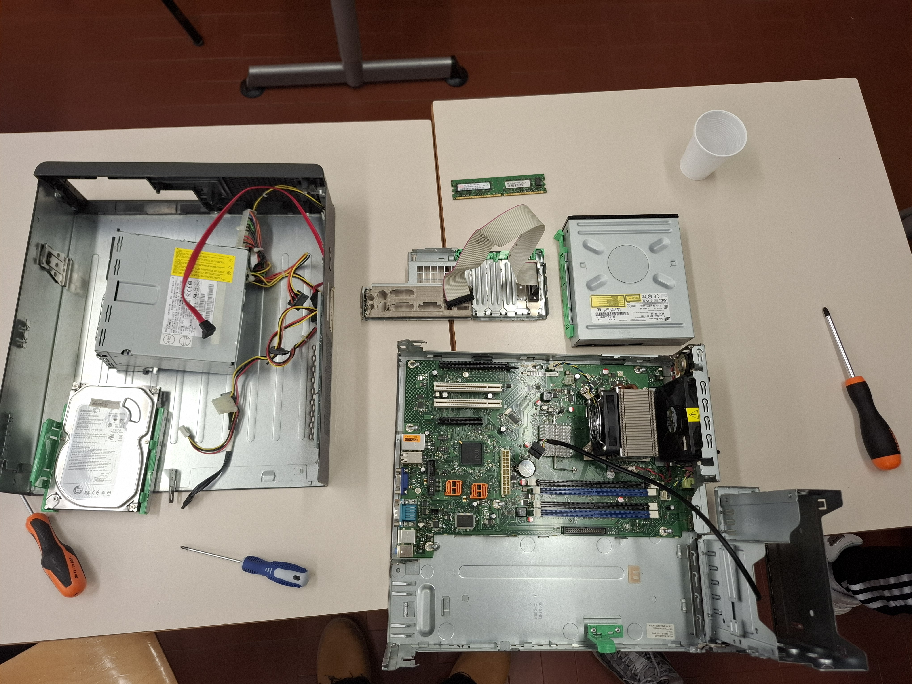

Il progetto “Monta e Smonta” è stato un’attività laboratoriale svolta a coppie con l’obiettivo di comprendere in modo concreto la struttura e il funzionamento di un computer.
Durante l’esperienza abbiamo prima smontato un PC, osservando e riconoscendo i vari componenti hardware come scheda madre, alimentatore, RAM, hard disk e sistema di raffreddamento.
Successivamente, seguendo un procedimento ordinato e collaborativo, abbiamo rimontato il computer, prestando attenzione ai collegamenti e alla corretta installazione di ogni parte.
L’attività ha richiesto collaborazione, precisione e capacità di problem solving, poiché ogni fase doveva essere eseguita con cura per evitare errori o danni ai componenti.
Grazie a questo progetto, la competenza principale acquisita è stata di tipo pratico nell’ambito hardware: abbiamo sviluppato manualità, familiarità con gli strumenti e una migliore comprensione del funzionamento fisico di un computer, andando oltre la teoria studiata in classe.
